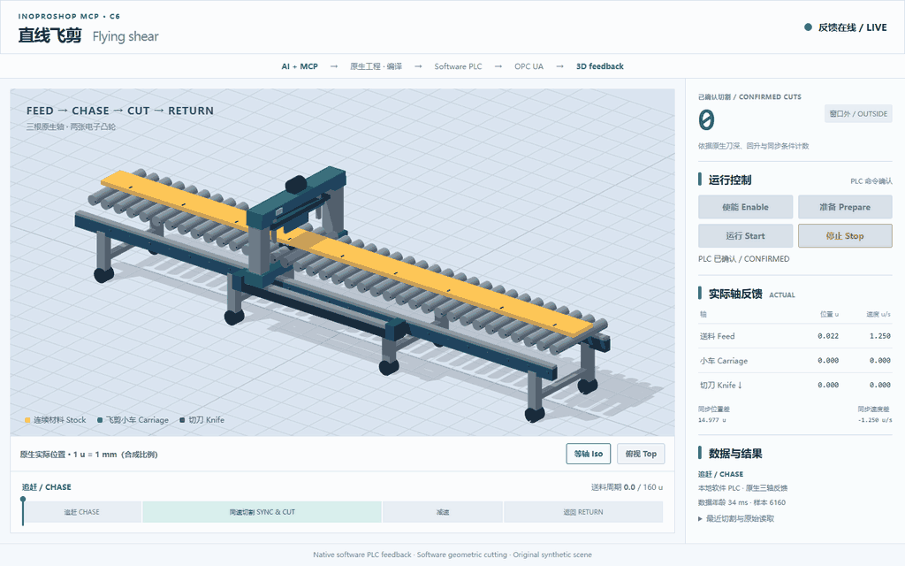

创建与编辑
创建空工程容器，查看工程结构，读取和修改 ST 程序及工程对象。
create_empty · read · write通过公开 ScriptEngine 接口，在 MCP 客户端中创建和编辑工程，读写 ST 程序，执行原生编译、保存和启动包导出。
一个面向 PLC 工程操作的小工具，附三轴飞剪示例。

通过 InoProShop 原生工程接口执行。
创建空工程容器，查看工程结构，读取和修改 ST 程序及工程对象。
create_empty · read · write调用原生编译器获取诊断信息，保存工程，并重新打开检查修改结果。
compile · save · tree导出软件控制器的原生启动包，用于后续按官方流程部署与运行。
export_boot从用户准备的空白软件控制器模板开始，MCP 添加三根虚拟轴、写入飞剪 ST，配置 10 ms 任务与 48 个接口字段。生成的工程在软件 PLC 上运行，配套 3D 场景显示运行反馈。
通过官方 IDE 或公开接口，准备空白软件控制器工程。
用户准备添加虚拟轴、ST 程序、任务和接口字段。
MCP 工程操作执行原生编译，检查符号并导出启动包。
MCP 工程操作按官方流程部署到软件 PLC，连接配套 3D 场景。
用户部署 · 配套展示先准备本机环境，再连接 MCP 客户端。
Windows、Node.js ≥ 18，以及带 ScriptEngine 的兼容 InoProShop。构建飞剪示例需匹配的软件控制器设备描述与运动组件。
安装依赖，将 server.mjs 配置到支持 stdio MCP 的客户端，并填写本机 IDE 路径。
创建空工程或读写已有 ST；运行飞剪示例时，先准备空白控制器模板。
{
"mcpServers": {
"inoproshop": {
"command": "node",
"args": ["C:/path/to/inoproshop-mcp/server.mjs"],
"env": {
"INOPROSHOP_EXE": "C:/path/to/InoProShop.exe",
"INOPROSHOP_PROFILE": "InoProShop(V1.9.1.6)"
}
}
}
}将示例路径替换为本机绝对路径。